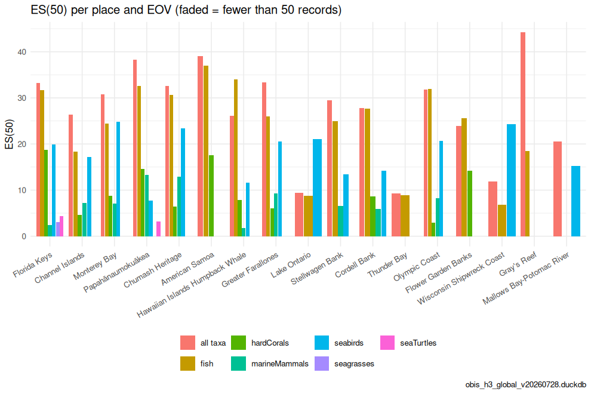
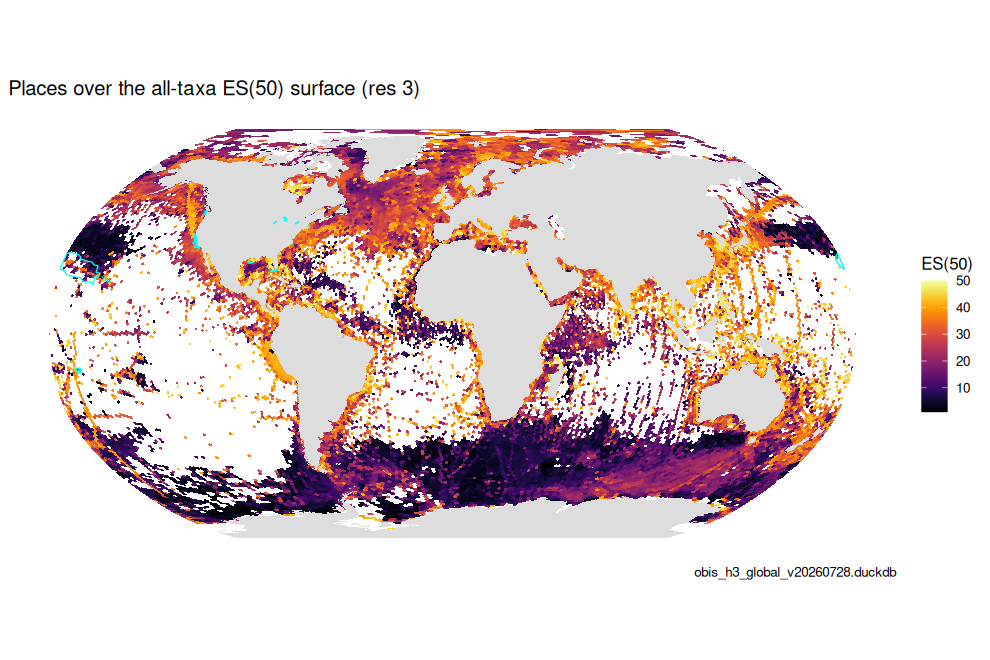

Managers ask about places — a National Marine Sanctuary, an EEZ, a
proposed protected area — not hexagons. Because every record in the
store is already binned to fine H3 cells, a place is just a set of
cells: place_cells() fills each polygon with cells at a
chosen resolution, and calc_place_indicators() pools the
species counts of those cells and computes the indicators with the same
calc_indicators() reference used everywhere else. This is
Figure 6 of the OBIS → H3 → EOV manuscript, and the pattern behind the
MarineSensitivity place
summaries.
library(obisindicators)
library(dplyr)
library(ggplot2)
library(sf)
con <- obis_store_connect() # the store named by OBIS_H3_DUCKDBPrecomputed. The store is not available where this documentation is built, so the chunks below were run locally by
data-raw/precompute_articles.Rand their output committed. This render used obis_h3_global_v20260728.duckdb, the global store.
The places
Any sf polygons work. Here: a GeoPackage named by
PLACES_GPKG if set, otherwise the U.S. National Marine
Sanctuaries from onmsR,
otherwise three demo boxes. Places that do not touch the store’s
footprint are dropped.
places_path <- Sys.getenv("PLACES_GPKG")
places <- if (nzchar(places_path) && file.exists(places_path)) {
st_read(places_path, quiet = TRUE)
} else if (requireNamespace("onmsR", quietly = TRUE)) {
onmsR::sanctuaries
} else {
bx <- function(n, xmin, ymin, xmax, ymax) st_sf(name = n, geometry = st_as_sfc(
st_bbox(c(xmin = xmin, ymin = ymin, xmax = xmax, ymax = ymax), crs = st_crs(4326))))
rbind(bx("Florida Keys", -83, 24, -80, 26), bx("NW Gulf", -97, 26, -90, 30),
bx("Lesser Antilles", -64, 12, -60, 18))
}
name_col <- intersect(c("sanctuary", "name", "NAME", "nms"), names(places))[1]
res_p <- as.integer(Sys.getenv("PAPER_RES_PLACE", "6"))
# keep places that intersect the store's footprint (occupied cells at res 2)
foot <- hex_sf(obis_cell_indicators(con, 2)$cell)
places <- places[lengths(st_intersects(st_transform(places, 4326), foot)) > 0, ]
places[[name_col]]
#> [1] "Cordell Bank" "Chumash Heritage"
#> [3] "Channel Islands" "Flower Garden Banks"
#> [5] "Florida Keys" "Greater Farallones"
#> [7] "Gray's Reef" "Hawaiian Islands Humpback Whale"
#> [9] "Lake Ontario" "Monterey Bay"
#> [11] "Mallows Bay-Potomac River" "Monitor"
#> [13] "American Samoa" "Olympic Coast"
#> [15] "Papahānaumokuākea" "Stellwagen Bank"
#> [17] "Thunder Bay" "Wisconsin Shipwreck Coast"Indicators per place and EOV
Each place is filled with H3 res 6 cells (n_cells), of
which n_cells_occupied hold records; n,
sp, es and the Hill numbers are then computed
on the pooled records — for all taxa and for each EOV.
pi <- bind_rows(lapply(c("all taxa", EOV_ORDER), function(e) {
d <- calc_place_indicators(con, places, name_col, res = res_p,
eov = if (e == "all taxa") NULL else e, esn = 50L)
cbind(group = e, d)
}))
knitr::kable(
pi |> select(group, place, n_cells, n_cells_occupied, n, sp, es, hill_1) |>
mutate(es = round(es, 2), hill_1 = round(hill_1, 2)),
caption = sprintf("Indicators per place and EOV (fill resolution H3 %d)", res_p))| group | place | n_cells | n_cells_occupied | n | sp | es | hill_1 |
|---|---|---|---|---|---|---|---|
| all taxa | American Samoa | 927 | 18 | 74285 | 821 | 39.03 | 147.83 |
| all taxa | Channel Islands | 97 | 97 | 1773440 | 2063 | 26.31 | 36.86 |
| all taxa | Chumash Heritage | 300 | 297 | 295407 | 2246 | 32.62 | 87.50 |
| all taxa | Cordell Bank | 89 | 88 | 31104 | 891 | 27.85 | 61.04 |
| all taxa | Florida Keys | 303 | 296 | 1321656 | 4338 | 33.23 | 91.41 |
| all taxa | Flower Garden Banks | 8 | 8 | 6746 | 340 | 23.85 | 40.47 |
| all taxa | Gray’s Reef | 2 | 2 | 8430 | 790 | 44.25 | 306.79 |
| all taxa | Greater Farallones | 233 | 230 | 118860 | 2007 | 33.36 | 109.45 |
| all taxa | Hawaiian Islands Humpback Whale | 86 | 86 | 91467 | 2023 | 26.16 | 48.49 |
| all taxa | Lake Ontario | 116 | 75 | 21670 | 80 | 9.38 | 6.34 |
| all taxa | Mallows Bay-Potomac River | 1 | 1 | 98 | 30 | 20.51 | 14.31 |
| all taxa | Monterey Bay | 417 | 414 | 1506459 | 3323 | 30.81 | 73.95 |
| all taxa | Olympic Coast | 265 | 259 | 17665 | 891 | 31.84 | 98.96 |
| all taxa | Papahānaumokuākea | 39394 | 5462 | 331120 | 2803 | 38.27 | 155.07 |
| all taxa | Stellwagen Bank | 61 | 61 | 34627 | 636 | 29.52 | 62.20 |
| all taxa | Thunder Bay | 282 | 118 | 7787 | 44 | 9.24 | 7.23 |
| all taxa | Wisconsin Shipwreck Coast | 65 | 42 | 2832 | 68 | 11.83 | 9.01 |
| fish | American Samoa | 927 | 9 | 63435 | 456 | 37.01 | 111.05 |
| fish | Channel Islands | 97 | 90 | 200106 | 316 | 18.37 | 21.36 |
| fish | Chumash Heritage | 300 | 234 | 42512 | 395 | 30.63 | 65.36 |
| fish | Cordell Bank | 89 | 47 | 2063 | 153 | 27.72 | 47.77 |
| fish | Florida Keys | 303 | 244 | 1249798 | 839 | 31.71 | 66.79 |
| fish | Flower Garden Banks | 8 | 6 | 282 | 62 | 25.64 | 32.99 |
| fish | Gray’s Reef | 2 | 2 | 376 | 57 | 18.44 | 17.55 |
| fish | Greater Farallones | 233 | 148 | 23751 | 312 | 26.01 | 44.62 |
| fish | Hawaiian Islands Humpback Whale | 86 | 66 | 32483 | 447 | 34.05 | 88.42 |
| fish | Lake Ontario | 116 | 73 | 21342 | 32 | 8.70 | 5.74 |
| fish | Mallows Bay-Potomac River | 1 | 1 | 2 | 1 | NA | 1.00 |
| fish | Monterey Bay | 417 | 314 | 128489 | 477 | 24.39 | 34.96 |
| fish | Olympic Coast | 265 | 153 | 2664 | 161 | 31.96 | 64.79 |
| fish | Papahānaumokuākea | 39394 | 427 | 205124 | 789 | 32.55 | 72.84 |
| fish | Stellwagen Bank | 61 | 61 | 10136 | 83 | 24.97 | 33.38 |
| fish | Thunder Bay | 282 | 110 | 7738 | 25 | 8.95 | 6.93 |
| fish | Wisconsin Shipwreck Coast | 65 | 34 | 2489 | 16 | 6.80 | 5.04 |
| hardCorals | American Samoa | 927 | 9 | 7275 | 121 | 17.53 | 17.94 |
| hardCorals | Channel Islands | 97 | 29 | 1039 | 12 | 4.68 | 3.31 |
| hardCorals | Chumash Heritage | 300 | 8 | 86 | 7 | 6.48 | 4.70 |
| hardCorals | Cordell Bank | 89 | 8 | 61 | 9 | 8.60 | 4.88 |
| hardCorals | Florida Keys | 303 | 130 | 23147 | 79 | 18.71 | 19.59 |
| hardCorals | Flower Garden Banks | 8 | 7 | 4839 | 37 | 14.18 | 13.89 |
| hardCorals | Gray’s Reef | 2 | 1 | 17 | 4 | NA | 2.50 |
| hardCorals | Greater Farallones | 233 | 12 | 55 | 6 | 6.00 | 5.59 |
| hardCorals | Hawaiian Islands Humpback Whale | 86 | 46 | 15418 | 72 | 7.89 | 6.38 |
| hardCorals | Lake Ontario | 116 | 0 | NA | NA | NA | NA |
| hardCorals | Mallows Bay-Potomac River | 1 | 0 | NA | NA | NA | NA |
| hardCorals | Monterey Bay | 417 | 39 | 376 | 13 | 8.80 | 5.72 |
| hardCorals | Olympic Coast | 265 | 7 | 333 | 4 | 2.96 | 1.77 |
| hardCorals | Papahānaumokuākea | 39394 | 178 | 50052 | 109 | 14.61 | 13.33 |
| hardCorals | Stellwagen Bank | 61 | 0 | NA | NA | NA | NA |
| hardCorals | Thunder Bay | 282 | 0 | NA | NA | NA | NA |
| hardCorals | Wisconsin Shipwreck Coast | 65 | 0 | NA | NA | NA | NA |
| mangroves | American Samoa | 927 | 0 | NA | NA | NA | NA |
| mangroves | Channel Islands | 97 | 0 | NA | NA | NA | NA |
| mangroves | Chumash Heritage | 300 | 0 | NA | NA | NA | NA |
| mangroves | Cordell Bank | 89 | 0 | NA | NA | NA | NA |
| mangroves | Florida Keys | 303 | 0 | NA | NA | NA | NA |
| mangroves | Flower Garden Banks | 8 | 0 | NA | NA | NA | NA |
| mangroves | Gray’s Reef | 2 | 0 | NA | NA | NA | NA |
| mangroves | Greater Farallones | 233 | 0 | NA | NA | NA | NA |
| mangroves | Hawaiian Islands Humpback Whale | 86 | 0 | NA | NA | NA | NA |
| mangroves | Lake Ontario | 116 | 0 | NA | NA | NA | NA |
| mangroves | Mallows Bay-Potomac River | 1 | 0 | NA | NA | NA | NA |
| mangroves | Monterey Bay | 417 | 0 | NA | NA | NA | NA |
| mangroves | Olympic Coast | 265 | 0 | NA | NA | NA | NA |
| mangroves | Papahānaumokuākea | 39394 | 0 | NA | NA | NA | NA |
| mangroves | Stellwagen Bank | 61 | 0 | NA | NA | NA | NA |
| mangroves | Thunder Bay | 282 | 0 | NA | NA | NA | NA |
| mangroves | Wisconsin Shipwreck Coast | 65 | 0 | NA | NA | NA | NA |
| marineMammals | American Samoa | 927 | 2 | 2 | 1 | NA | 1.00 |
| marineMammals | Channel Islands | 97 | 97 | 10069 | 22 | 7.21 | 5.12 |
| marineMammals | Chumash Heritage | 300 | 259 | 3518 | 25 | 12.88 | 10.41 |
| marineMammals | Cordell Bank | 89 | 84 | 3172 | 17 | 5.94 | 3.04 |
| marineMammals | Florida Keys | 303 | 52 | 775 | 6 | 2.44 | 2.09 |
| marineMammals | Flower Garden Banks | 8 | 1 | 1 | 1 | NA | 1.00 |
| marineMammals | Gray’s Reef | 2 | 2 | 16 | 2 | NA | 1.46 |
| marineMammals | Greater Farallones | 233 | 216 | 6716 | 28 | 9.24 | 4.63 |
| marineMammals | Hawaiian Islands Humpback Whale | 86 | 86 | 33027 | 10 | 1.82 | 1.13 |
| marineMammals | Lake Ontario | 116 | 0 | NA | NA | NA | NA |
| marineMammals | Mallows Bay-Potomac River | 1 | 0 | NA | NA | NA | NA |
| marineMammals | Monterey Bay | 417 | 388 | 78950 | 26 | 7.03 | 3.66 |
| marineMammals | Olympic Coast | 265 | 220 | 2477 | 17 | 8.22 | 3.67 |
| marineMammals | Papahānaumokuākea | 39394 | 615 | 728 | 25 | 13.29 | 9.71 |
| marineMammals | Stellwagen Bank | 61 | 61 | 13557 | 16 | 6.56 | 4.20 |
| marineMammals | Thunder Bay | 282 | 0 | NA | NA | NA | NA |
| marineMammals | Wisconsin Shipwreck Coast | 65 | 0 | NA | NA | NA | NA |
| seabirds | American Samoa | 927 | 3 | 12 | 8 | NA | 7.56 |
| seabirds | Channel Islands | 97 | 95 | 10946 | 97 | 17.14 | 13.95 |
| seabirds | Chumash Heritage | 300 | 265 | 15825 | 126 | 23.43 | 31.08 |
| seabirds | Cordell Bank | 89 | 86 | 4918 | 57 | 14.20 | 13.14 |
| seabirds | Florida Keys | 303 | 178 | 4344 | 68 | 19.91 | 20.24 |
| seabirds | Flower Garden Banks | 8 | 1 | 1 | 1 | NA | 1.00 |
| seabirds | Gray’s Reef | 2 | 1 | 2 | 1 | NA | 1.00 |
| seabirds | Greater Farallones | 233 | 226 | 20793 | 131 | 20.61 | 22.83 |
| seabirds | Hawaiian Islands Humpback Whale | 86 | 50 | 3263 | 34 | 11.63 | 9.92 |
| seabirds | Lake Ontario | 116 | 25 | 327 | 47 | 21.02 | 21.45 |
| seabirds | Mallows Bay-Potomac River | 1 | 1 | 81 | 20 | 15.21 | 8.90 |
| seabirds | Monterey Bay | 417 | 392 | 50108 | 147 | 24.80 | 35.08 |
| seabirds | Olympic Coast | 265 | 180 | 4814 | 86 | 20.65 | 23.64 |
| seabirds | Papahānaumokuākea | 39394 | 4169 | 10234 | 73 | 7.75 | 4.23 |
| seabirds | Stellwagen Bank | 61 | 61 | 4743 | 58 | 13.48 | 11.75 |
| seabirds | Thunder Bay | 282 | 17 | 49 | 19 | NA | 13.66 |
| seabirds | Wisconsin Shipwreck Coast | 65 | 16 | 343 | 52 | 24.28 | 28.78 |
| seagrasses | American Samoa | 927 | 0 | NA | NA | NA | NA |
| seagrasses | Channel Islands | 97 | 8 | 18 | 1 | NA | 1.00 |
| seagrasses | Chumash Heritage | 300 | 5 | 21 | 1 | NA | 1.00 |
| seagrasses | Cordell Bank | 89 | 0 | NA | NA | NA | NA |
| seagrasses | Florida Keys | 303 | 9 | 411 | 4 | 3.11 | 2.38 |
| seagrasses | Flower Garden Banks | 8 | 0 | NA | NA | NA | NA |
| seagrasses | Gray’s Reef | 2 | 0 | NA | NA | NA | NA |
| seagrasses | Greater Farallones | 233 | 5 | 21 | 4 | NA | 2.71 |
| seagrasses | Hawaiian Islands Humpback Whale | 86 | 1 | 2 | 1 | NA | 1.00 |
| seagrasses | Lake Ontario | 116 | 0 | NA | NA | NA | NA |
| seagrasses | Mallows Bay-Potomac River | 1 | 0 | NA | NA | NA | NA |
| seagrasses | Monterey Bay | 417 | 11 | 34 | 3 | NA | 1.88 |
| seagrasses | Olympic Coast | 265 | 1 | 4 | 1 | NA | 1.00 |
| seagrasses | Papahānaumokuākea | 39394 | 2 | 2 | 1 | NA | 1.00 |
| seagrasses | Stellwagen Bank | 61 | 0 | NA | NA | NA | NA |
| seagrasses | Thunder Bay | 282 | 0 | NA | NA | NA | NA |
| seagrasses | Wisconsin Shipwreck Coast | 65 | 0 | NA | NA | NA | NA |
| seaTurtles | American Samoa | 927 | 0 | NA | NA | NA | NA |
| seaTurtles | Channel Islands | 97 | 0 | NA | NA | NA | NA |
| seaTurtles | Chumash Heritage | 300 | 5 | 5 | 2 | NA | 1.65 |
| seaTurtles | Cordell Bank | 89 | 0 | NA | NA | NA | NA |
| seaTurtles | Florida Keys | 303 | 68 | 157 | 5 | 4.35 | 2.51 |
| seaTurtles | Flower Garden Banks | 8 | 0 | NA | NA | NA | NA |
| seaTurtles | Gray’s Reef | 2 | 2 | 10 | 3 | NA | 2.57 |
| seaTurtles | Greater Farallones | 233 | 9 | 9 | 1 | NA | 1.00 |
| seaTurtles | Hawaiian Islands Humpback Whale | 86 | 18 | 39 | 1 | NA | 1.00 |
| seaTurtles | Lake Ontario | 116 | 0 | NA | NA | NA | NA |
| seaTurtles | Mallows Bay-Potomac River | 1 | 0 | NA | NA | NA | NA |
| seaTurtles | Monterey Bay | 417 | 14 | 19 | 1 | NA | 1.00 |
| seaTurtles | Olympic Coast | 265 | 7 | 10 | 1 | NA | 1.00 |
| seaTurtles | Papahānaumokuākea | 39394 | 389 | 466 | 4 | 3.26 | 2.38 |
| seaTurtles | Stellwagen Bank | 61 | 3 | 4 | 2 | NA | 2.00 |
| seaTurtles | Thunder Bay | 282 | 0 | NA | NA | NA | NA |
| seaTurtles | Wisconsin Shipwreck Coast | 65 | 0 | NA | NA | NA | NA |
d <- pi |> filter(!is.na(n)) |>
mutate(reliable = n >= 50, place = reorder(place, -n))
p <- ggplot(d, aes(x = place, y = es, fill = group, alpha = reliable)) +
geom_col(position = position_dodge(width = .85), width = .8) +
scale_alpha_manual(values = c(`TRUE` = 1, `FALSE` = .35), guide = "none") +
labs(x = NULL, y = "ES(50)", fill = NULL,
title = "ES(50) per place and EOV (faded = fewer than 50 records)",
caption = store_label) +
theme_minimal(base_size = 11) +
theme(legend.position = "bottom", axis.text.x = element_text(angle = 30, hjust = 1))
p
plot of chunk fig6
Where the places sit
The places over the all-taxa ES(50) surface (H3 3, masked to cells with at least 50 records):
allr <- obis_cell_indicators(con, RES_MAP)
robin <- "+proj=robin +lon_0=0 +x_0=0 +y_0=0 +ellps=WGS84 +datum=WGS84 +units=m +no_defs"
bb <- st_bbox(st_transform(hex_sf(allr$cell), robin))
p <- gmap_cells(allr, "es", label = "ES(50)", mask = allr$n >= 50) +
geom_sf(data = st_transform(places, 4326), fill = NA, color = "cyan", linewidth = .4) +
# re-assert the frame: an added sf layer otherwise widens coord_sf to the world
coord_sf(crs = robin, xlim = bb[c("xmin", "xmax")], ylim = bb[c("ymin", "ymax")]) +
labs(title = sprintf("Places over the all-taxa ES(50) surface (res %d)", RES_MAP), caption = store_label)
p
plot of chunk fig6-map
DBI::dbDisconnect(con, shutdown = TRUE)